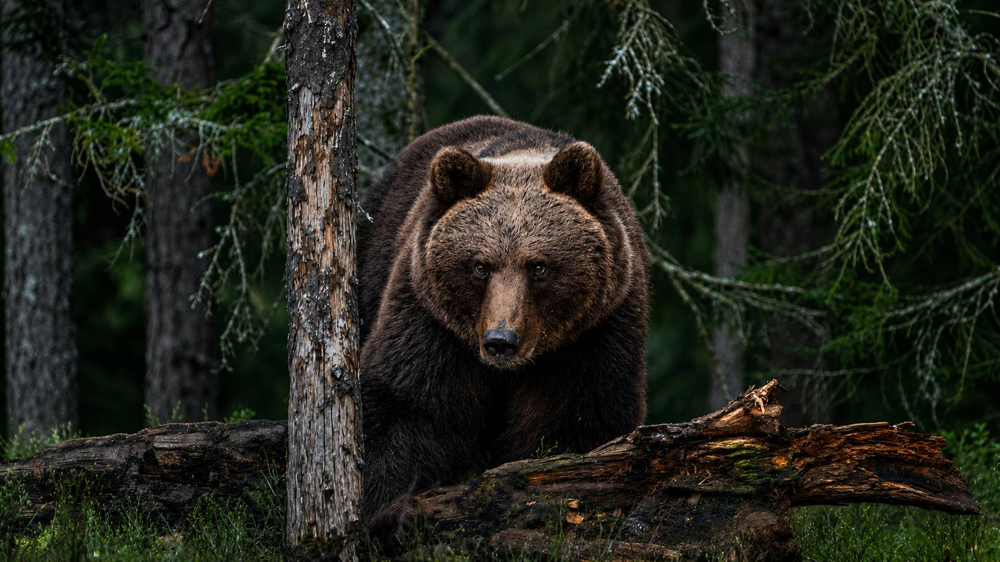

The brown bear (Ursus arctos) is a large bear native to Eurasia and North America. Of the land carnivorans, it is rivaled in size only by its closest relative, the polar bear, which is much less variable in size and slightly bigger on average. The brown bear is a sexually dimorphic species, as adult males are larger and more compactly built than females.
learrn moreHera are some bear species:
the following counrries have largest populations of brown bears :
